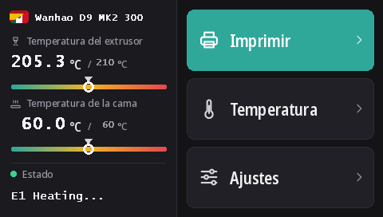

Flashear la pantalla táctil de la Duplicator 9
Todas las D9, de la MK1 a la MK3, tienen la misma pantalla táctil DWIN T5 (480 × 272). Con estos firmwares funciona con DGUS Reloaded 2.0, nuestra nueva interfaz en 16 idiomas, que se flashea desde una tarjeta microSD.
Descargar DWIN_SET.zip (DGUS Reloaded 2.0)
Qué aporta DGUS Reloaded 2.0
- 16 idiomas: English, Français, Deutsch, Español, Italiano, Português, Nederlands, Polski, Türkçe, Русский, العربية, हिन्दी, 中文, 日本語, 한국어, Bahasa Indonesia. Toque la bandera junto al nombre de la impresora en la pantalla de inicio para cambiarlo; la impresora recuerda la elección.
- Una página para el sensor de filamento: Ajustes → Filamento → Sensor de filamento. Vea Sensor de filamento.
- Una línea de estado que permanece: el último mensaje, Ready por ejemplo, sigue en pantalla en lugar de desaparecer a los 30 segundos.
- Indicadores de temperatura para la boquilla y la cama, con la temperatura objetivo marcada.
- Un nuevo aspecto en todas las páginas: tema oscuro, botones más grandes, pictogramas en las ventanas emergentes.

1. Formatear la tarjeta microSD
- Windows: Windows 11 a menudo no formatea en FAT32; use GUIFormat con un tamaño de unidad de asignación de 4096.
- Linux:
sudo mkfs.fat -F 32 -s 8 /dev/sdX1(compruebe antes el dispositivo conlsblk). - macOS:
sudo newfs_msdos -F 32 -c 8 /dev/diskN(compruébelo condiskutil list).
2. Copiar los archivos
Descomprima DWIN_SET.zip y copie la carpeta DWIN_SET completa en la raíz de la tarjeta.
3. Flashear
- Apague la impresora y desenchúfela.
- Abra la parte delantera de la base para llegar a la parte trasera de la pantalla, donde está su ranura microSD.
- Inserte la tarjeta y encienda. La pantalla muestra la actualización en 10 a 30 segundos; espere a que se reinicie con normalidad, de 1 a 3 minutos en total.
- Apague, retire la tarjeta y cierre la base.
El vídeo de Wanhao sobre la actualización de la pantalla de la D9 muestra dónde está la ranura.
De dónde viene
DGUS Reloaded 2.0 redibuja página por página DGUS Reloaded 1.0.3 (de Desuuuu y luego Neo2003). Su código fuente, el programa que genera los archivos de la pantalla y las traducciones están en GitHub. ¿Una palabra incorrecta o poco natural en su idioma? Díganoslo en Discord o abra un issue allí.
Para volver a DGUS Reloaded 1.0.3, por ejemplo con un firmware anterior a la v2.0.9, flashee DWIN_SET_1.0.3.zip del mismo modo.
Volver a la pantalla de Wanhao
El firmware de pantalla de Wanhao solo funciona con el firmware de placa base de Wanhao. MK1: el archivo de pantalla de la versión correspondiente en la página MK1. MK1 + kit, MK2 y MK3: DWIN_SET_MK2.zip. Mismo procedimiento.